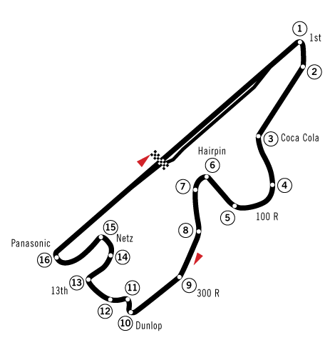

Sport
Parapente
Les parapentistes décollent du voisinage du parking de Gotenba, entre Subashiri et le pic Hōei-zan, sur le versant sud de la montagne, ou parfois d'autres endroits selon la direction du vent. Plusieurs écoles de parapente utilisent les vastes pentes mi-sablonneuses mi-herbeuses du volcan comme terrain d'entraînement.
Le ultra-trail
Depuis 2012, un ultra-trail appelé Ultra-Trail Mt.Fuji se dispute chaque année en avril au pied du mont Fuji. L'épreuve intègre l'Ultra-Trail World Tour en tant que cinquième étape d'un circuit mondial de dix courses lors de sa fondation en 2013.

Le circuit automobile
Il existe également un circuit automobile au pied du mont Fuji : le Fuji Speedway. Le tracé de 4,563 km a été créé en 1965 et a accueilli le Grand Prix du Japon de Formule 1 en 1976 et 1977. Cette année-là, un grave accident impliquant la Ferrari de Gilles Villeneuve entraîne la mort d'un spectateur et d'un commissaire de piste. Le Japon est privé de Grand Prix jusqu'en 1987 où il se déroule, jusqu'en 2006, à Suzuka34. En 2000, le circuit du mont Fuji devient la propriété de Toyota35 et finalement, en 2007, la compétition y fait son retour avec la victoire de Lewis Hamilton.
